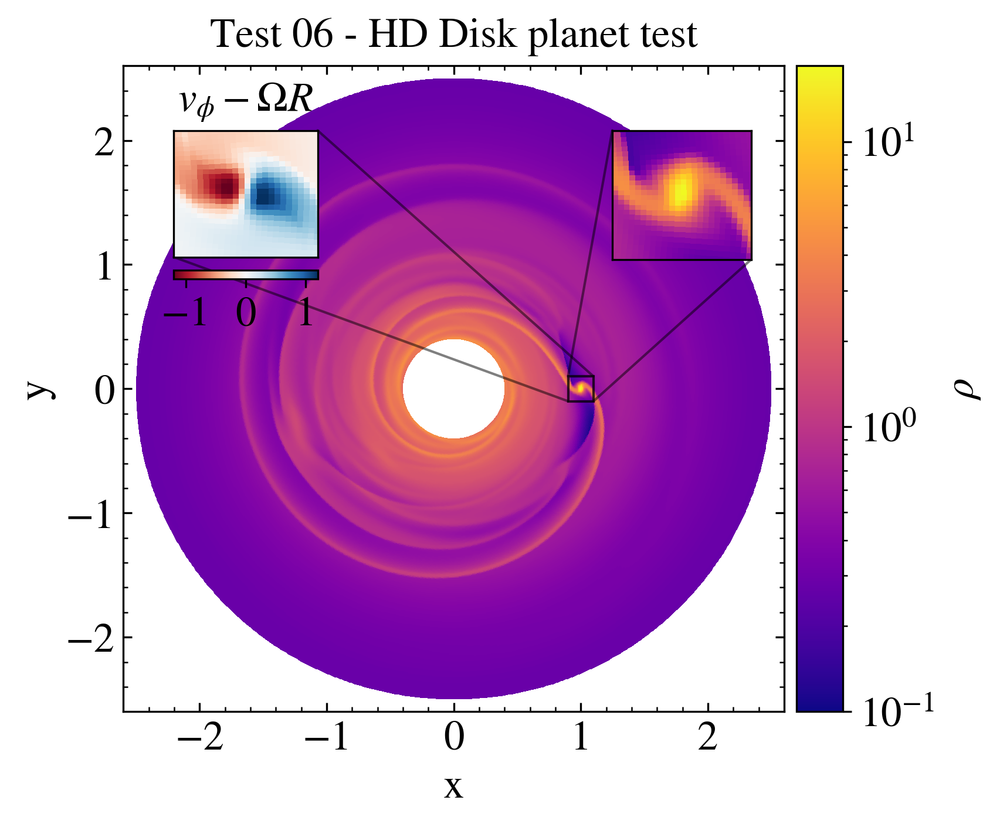

HD Disk-Planet¶
The Disk-Planet test offers a nice view of an interaction of a planet embedded in an proto-stellar disk rotating around the protostar.
The display shows the density profile of the disk and presents two different zooms of the planet region in density scale and angular velocity scale.
""" HD disk-planet test This test shows how to plot different 2D quantities from a test problem in the same plot with two zooms. The package "os" is loaded to create the path to the directory $PLUTO_DIR/Test_problems/HD/Disk_Planet, where the the HD disk-planet test problem is located. The data is loaded into a pload object D and the Image class is created. The create_axes method is used here to make easier to associate the zooms with the main plot. The display method is used to plot the density in the main plot, while the zoom method is used to create the two zooms. The image is then saved and shown on screen. Note that the second zoom requires the keyword ax to be passed to the zoom method, in order to associate the zoom with main plot. The zoom method is called twice, once for each zoom region. If no keyword ax was passed, the second zoom would be associated as a zoom of the first zoom. The second zoom is also plotted with a different variable with respect to the main plot, to show the flexibility of the zoom method in plotting different quantities in the same region. """ # Loading the relevant packages import pyPLUTO as pp import os # Creating the path for the data directory plutodir = os.environ['PLUTO_DIR'] wdir = plutodir+'/Test_Problems/HD/Disk_Planet' # Loading the data into a pload object D. D = pp.Load(path = wdir) # Creating the Image and the subplot axes (to have two zoom simultaneously) I = pp.Image() ax = I.create_axes() # Plotting the data I.display(D.rho, x1 = D.x1rc, x2 = D.x2rc, cscale = 'log', cpos = 'right', title = 'Density', vmin = 0.1) #Zooming the planet region I.zoom(xrange = [0.9,1.1], yrange = [-0.1,0.1], pos = [0.74,0.95,0.7,0.9]) I.zoom(var = D.vx2, xrange = [0.9,1.1], yrange = [-0.1,0.1], pos = [0.07,0.27,0.67,0.9], cpos = 'bottom', cmap = 'magma', cscale = 'linear', vmin = 5, vmax = 7, ax = ax, title = r'$v_\phi$') # Saving the image I.savefig('test06_diskplanet.png') pp.show()
{kind=link}